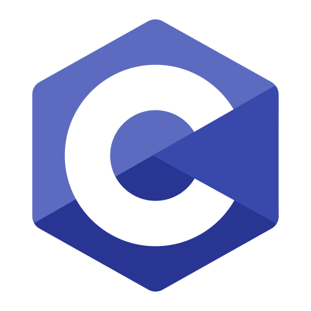

Java es un lenguaje de programación y una plataforma informática que fue comercializada por primera vez en 1995 por Sun Microsystems. Hay muchas aplicaciones y sitios web que no funcionarán, probablemente, a menos que tengan Java instalado y cada día se crean más. Java es rápido, seguro y fiable.
El lenguaje de programación C es un lenguaje para programadores en el sentido de que proporciona una gran flexibilidad de programación y una muy baja comprobación de incorrecciones, de forma que el lenguaje deja bajo la responsabilidad del programador acciones que otros lenguajes realizan por si mismos Ritchie a mediados de los años 70.

Python es un lenguaje de programación interpretado cuya filosofía hace hincapié en la legibilidad de su código. Se trata de un lenguaje de programación multiparadigma, ya que soporta orientación a objetos, programación imperativa y, en menor medida, programación funcional.

C# es un lenguaje de programación multiparadigma desarrollado y estandarizado por Microsoft como parte de su plataforma .NET, que después fue aprobado como un estándar por la ECMA (ECMA-334) e ISO (ISO/IEC 23270). C# es uno de los lenguajes de programación diseñados para la infraestructura de lenguaje común.

C++ es un lenguaje de programación diseñado en 1979 por Bjarne Stroustrup. La intención de su creación fue extender al lenguaje de programación C mecanismos que permiten la manipulación de objetos. En ese sentido, desde el punto de vista de los lenguajes orientados a objetos, C++ es un lenguaje híbrido.

Visual Basic .NET (VB.NET) es un lenguaje de programación orientado a objetos que se puede considerar una evolución de Visual Basic implementada sobre el framework .NET. Su introducción resultó muy controvertida, ya que debido a cambios significativos en el lenguaje VB.NET no es retro compatible con Visual Basic.

JavaScript (abreviado comúnmente JS) es un lenguaje de programación interpretado, dialecto del estándar ECMAScript. Se define como orientado a objetos, basado en prototipos, imperativo, débilmente tipado y dinámico. Se utiliza principalmente del lado del cliente, implementado como parte de un navegador web.

PHP es un lenguaje de programación de uso general que se adapta especialmente al desarrollo web. Fue creado inicialmente por el programador danés-canadiense Rasmus Lerdorf en 1994. En la actualidad, la implementación de referencia de PHP es producida por The PHP Group.

Swift Swift es un lenguaje de programación multiparadigma creado por Apple enfocado en el desarrollo de aplicaciones para iOS y macOS. Fue presentado en la WWDC 2014 y está diseñado para integrarse con los Frameworks Cocoa y Cocoa Touch; puede usar cualquier biblioteca programada en Objective-C y llamar a funciones de C.

SQL (por sus siglas en inglés Structured Query Language; en español lenguaje de consulta estructurada) es un lenguaje de dominio específico utilizado en programación, diseñado para administrar, y recuperar información de sistemas de gestión de bases de datos relacionales.

Ruby es un lenguaje de programación interpretado, reflexivo y orientado a objetos, creado por el programador japonés Yukihiro "Matz" Matsumoto, quien comenzó a trabajar en Ruby en 1993, y lo presentó públicamente en 1995. Combina una sintaxis inspirada en Python y Perl con características de programación orientada a objetos similares a Smalltalk.
Clic para volver al menú →